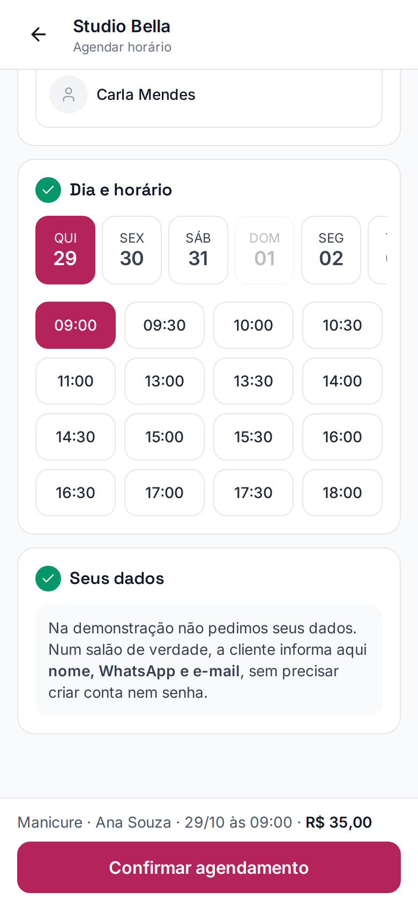

Dia e Beleza
Dica de agenda
Seu
almoço
também
é
agenda.
É assim que a cliente vê:
página de agendamento do salão de demonstração
Do 11:00 pula
para o
13:00.
O almoço está bloqueado. Ninguém marca em cima.

12h às 13h: almoço
Bloqueie
antes
também:
1
A folga
antes de oferecer horário.
2
Um respiro
entre serviços longos.
3
Feriado e curso
assim que souber.
Primeiro o que
é seu,
depois
o resto.
Horário bloqueado não aparece para a cliente.
Salve para montar a semana
diaebeleza.com.br